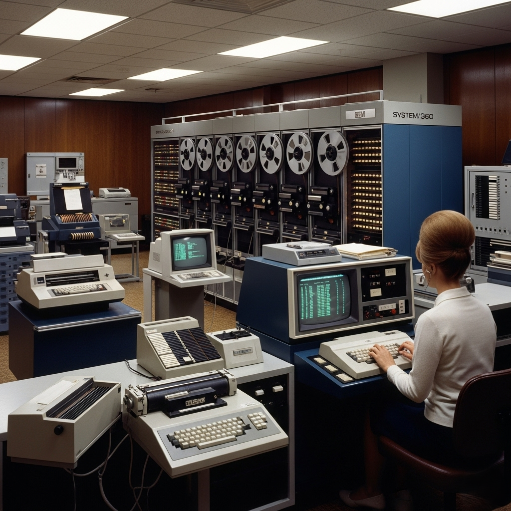
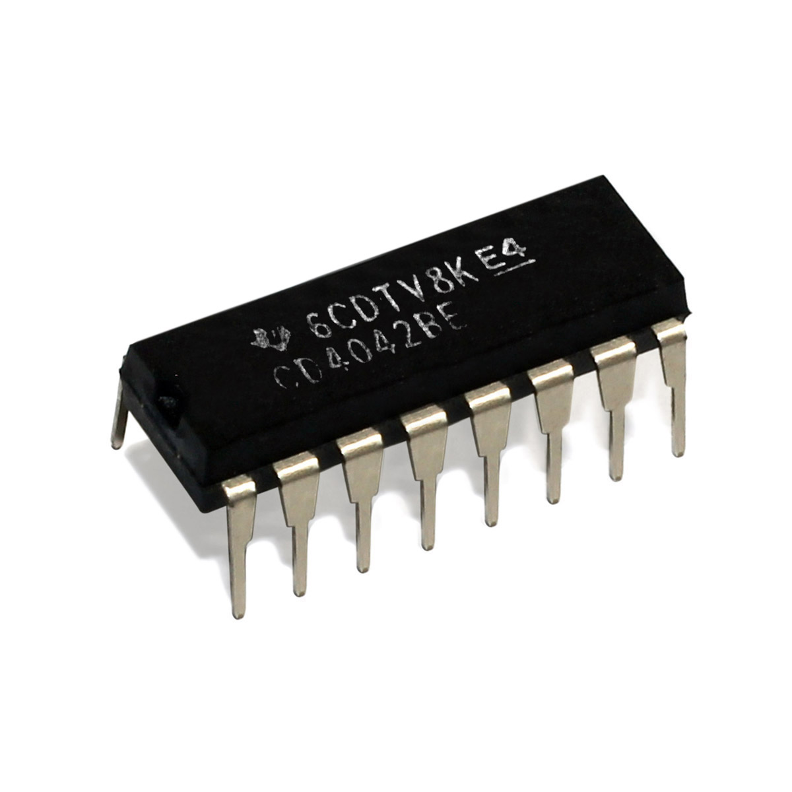
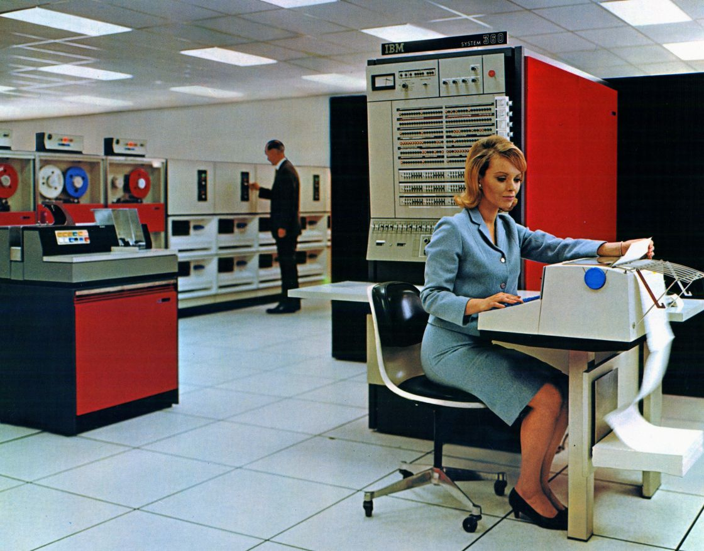

Contexto Histórico e Transição Tecnológica
- Terceira Geração teve início no final dos anos 1950 e predominância nos anos 1960–1970;
- Destaque para a transição da segunda geração (que usava transistores) para a terceira, com a introdução dos circuitos integrados (chips);
- Os avanços da microeletrônica permitiram computadores mais potentes e compactos.
Principais Características Técnicas
- Uso de circuitos integrados no lugar de transistores individuais;
- Redução no tamanho físico das máquinas e aumento na velocidade e capacidade de processamento;
- Introdução de sistemas operacionais mais avançados e multiprogramação;
- Maior confiabilidade e menor consumo de energia.


Impacto na Sociedade e na Computação
- Democratização do acesso: computadores passaram a ser usados em empresas, universidades e órgãos governamentais;
- Surgimento de linguagens de programação mais desenvolvidas (como COBOL e Fortran);
- Fomentou o crescimento da indústria de software e abriu caminho para a quarta geração (microprocessadores).